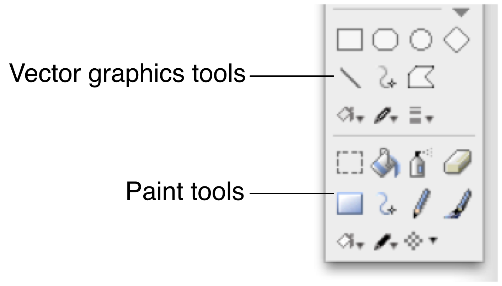
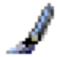
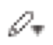

One of the most popular uses for LiveCode is to create full blown multimedia applications. Even if you aren't creating a traditional multimedia application, many applications require a compelling user interface.
This chapter details LiveCode's media support. We discuss the image features and capabilities: how to import and export images in a variety of formats, how to manipulate images within LiveCode, working with masks, the clipboard and screen capture, right through to animated GIFs. We detail the vector graphic features and explain how to manipulate vector graphics by script. We then cover the video and audio feature set. Then we show you how to create custom themed buttons. Finally we given an overview of the support for visual transition effects.
LiveCode supports a wide variety of image formats, including the popular PNG and JPEG formats. PNG images are space efficient and have full support for alpha channels. JPEG images are good for displaying photos. For more details see the table below.
| Format | Export | Mask | Comments |
|---|---|---|---|
| PNG | Yes | Yes, 1-bit or alpha channel | Supports gamma adjustment, supports alpha channels, supports interlacing |
| JPEG | Yes | No | Supports progressive JPEGs; lossy compression. Export allows you to set the level of compression |
| GIF | Yes | 1-bit | GIF87a and GIF89a; supports animation; supports interlaced GIFs; maximum 256 colors |
| BMP | No | No | Uncompressed |
| PBM | Yes | No | 1-bit (black and white) |
| PGM | No | No | Grayscale |
| PPM | No | No | |
| XBM | No | No | |
| XPM | No | No | 1-bit (black and white) |
| XWD | No | No | |
| PICT | No | No | uncompressed |
As you can see from the table above, a number of the supported image formats can also be exported by LiveCode.
You can modify images using LiveCode's paint tools, or manipulate the binary data by script or using an external.
You can create images from any of LiveCode's native objects, including buttons, fields and graphics. These can then been exported in a number of formats. You can copy images from the clipboard or export images to the clipboard.
LiveCode can capture a portion of the screen, or the entire screen.
To import an image, choose File -> Import As Control -> Image File. Select the image file you want to import. This will import the image file into a new image object on the current card. This is equivalent to executing the import paint command in the Message Box.
Note: If you want to reuse an image throughout your application, for example as part of a custom skin for your application, create a substack and import all your images into that. You can then reference them throughout your stack file. For more information, see the section Creating Custom Skins, below.
To reference an image file on disk choose File -> New Referenced Control -> Image File. This creates an image object on the current card and sets its fileName property to the path of the image file you selected. Referenced images do not expand the size of your stack and are only loaded from disk into memory when you navigate to the current card or otherwise display them on screen. Referenced images are ideal where you want to update the image in an image editor and see the changes in LiveCode without having to re-import.
You may wish to consider creating a folder next to your stack file to contain image files then using the Inspector to modify the file path to the image to be a referenced path. This allows you to move the stack and folder of images together onto a different system. for more information on referenced file paths, see the section File Name Specifications and Paths.
You can use the standalone builder to copy referenced images into a directory (updating each image's fileName property) or to copy referenced images into your stack. For more information see the chapter Deploying your Application.
Important: You cannot use the paint tools or manipulate the binary data of referenced images. You must import them first. If you want to modify the original file, you can make changes then export the image – see below for more details.
To import an image by capturing a portion of the screen, choose File -> Import As Control -> Snapshot. Select the region of the screen you want to import.
To take a screen capture by script, use the import snapshot command. To specify a section of the screen to import from without displaying the crosshairs use import snapshot from rect:
import snapshot from 100,100,200,200
This will create an image object on the current card from the rectangular area specified.
To create an image, drag an image object from the Tools palette to your
stack. You may now paint on the image using the paint tools, set the
fileNamereference to an image or manipulate the binary data of the
image.
To access the paint tools, press the fold out triangle at the bottom right of the Tools palette.

Figure 85 – The Graphic Tools
| Tool | Usage | Keyboard Modifiers | |
|---|---|---|---|
| Select | Drag to select a rectangular area of an image | Shift constraints to a square; command / control duplicates selection | |
| Bucket | Fills shapes with color. Will fill any pixel connected to the pixel you click with the brush color | Control-click to fill with transparency | |
|
Spray can | Draw an airbrushed color using the brush shape | Control-click to spray with transparency |
| Eraser | Remove color from an area leaving it transparent. Uses the brush shape | ||
| Polygon | Draw polygon shape (hold down on the rectangle shape to select this shape) | Shift constrains lines angles to multiples of 22.5°; control creates transparency | |
| Line | Draw a straight line | Shift constrains lines angles to multiples of 22.5°; control creates transparency | |
| Freehand | Draw a freehand curve (hold down on the line shape to select this shape). If the filled option is chosen the beginning and end of the curve are joined automatically when you finish drawing | Alt / option prevents drawing line border; control creates transparency | |
| Pencil | Draw a single-pixel-width freehand line | Control creates transparency | |
|  | Brush | Draw brush strokes using the brush shape | Control creates transparency; command click to magnify |
| Fill (brush) color | Select a color to fill shapes or use with the brush tools | ||
|  | Line color | Select a color to draw lines or use with the pencil tool | |
| Brush shape | Choose a brush shape for use with the brush, eraser and airbrush tools |
To magnify an image, right click it with the pointer tool and choose Magnify from the menu.
When you edit an image, it will be recompressed into the format specified by the paintCompression global property.
Painting by script can be useful if you want the user to be able to see each paint action. If you want to manipulate the data of an image more efficiently off screen, see the next section.
To control the paint tools by script, create an image then choose the paint tool you want to use. Set the appropriate brush, pattern or line size then use the drag command to paint.
The following example creates an image, chooses the brush tool, selects a small circular brush shape, selects a red color, then draws a line:
-- set the size of the image
set the rect of the templateImage to 100,100,400,400
create image
choose brush tool
set the brush to 8
set the brushColor to red -- could use an RGB triplet here
set the dragSpeed to 20 -- very slow
drag from 120,120 to 300,300
For more information, see the entries for the templateImage, tool, brush, brushColor, brushPattern, dragSpeed, penColor and penPattern in the LiveCode Dictionary.
You may reduce the size of an image using the crop command.
You may rotate an image using the rotate command.
To adjust the quality of the scaling algorithm used when scaling an image, set the resizeQuality property before setting the image's rect.
To manipulate the binary data of an image, use the image's imageData property. This property returns the color and transparency value of each pixel in the image in a consistent format regardless of the format the image is saved in. The imageData is stored as binary, with each pixel represented by 4 bytes. To convert it to and from RGB values use the byteToNum and numToByte functions.
For example, the numeric value of the red, green and blue channels respectively for the tenth pixel are given by the expressions:
charToNum(char (4 * 9 + 2 of the imageData of image <image>)
charToNum(char (4 * 9 + 3 of the imageData of image <image>)
charToNum(char (4 * 9 + 4 of the imageData of image <image>)
To manipulate the binary data of an image using an external, use the imagePixMapID property.
When you set the imageData of an image the image will be recompressed into the format specified by the paintCompression global property.
Use the import snapshot command to create an image from objects or a region of a stack. Instead of specifying a rectangle in global coordinates (as described above) specify a stack or object.
Note: Unlike screen capturing, the stack or object you specify to import an image from does not need to be displayed on screen. You can create a layout off screen in an invisible stack then render it into an image.
To import a snapshot of a region of a stack:
import snapshot from 100,100,200,200 of stack "Layout"
To import a snapshot of an object:
import snapshot from button 5 of stack "objects"
The import snapshot command creates a new image in the current defaultStack. The image is encoded using the current paintCompression format.
To save this snapshot directly to a file instead of creating an image, use the export snapshot command:
export snapshot from the selectedObject to file "snap.jpg" as JPEG
To export an image in the current format that it is stored in, put it into a binary file using the URL commands. The following example prompts the user to select a file then export the image into it:
ask file "Select a file:"
put image "picture" into URL ("binfile:" & it)
To export an image in a different format, use the export command.
export image "picture" to file "picture.png" as PNG
You may also export an image to a variable. See the export command in the LiveCode Dictionary for more information.
To copy an image internally without using the system clipboard, simply put it into a variable or into another image.
put image 1 into image 2
To recompress the image in a different format, use the export command to export it to a variable then put that variable into an image.
To copy an image to the clipboard, use the copy command.
copy image 1
To paste an image from the clipboard, use the paste command.
To transfer the binary data of an image to and from the clipboard get and set the clipBoardData["image"] property. See the clipBoardData entry in the LiveCode Dictionary for more information.
You can import an animated GIF image in the same way you import other images.
Set the repeatCount property to specify how often to play the animation. Setting the repeatCount to 0 pauses the animation and setting it to -1 causes it to repeat forever.
To change the current frame set the currentFrame property.
Note: If you use an animated GIF as a button icon, it will play simultaneously in each button it is used for.
In addition to bitmap graphics, LiveCode also supports vector graphics. You can create vector graphics using the graphics tools, or by script. You can manipulate them interactively in the IDE or by script. You can relayer them, export a description of them or convert them to bitmap format.
Tip: Animation Engine is a 3rd party library that includes a set of functions for programming interactive graphic animations. See the Related Software section of our web site for more information.
To see the graphic tools, unfold the triangle at the bottom right of the tools palette. The graphics tools are located above the paint tools on the tools palette. The graphic tools operate in the same way as the paint tools, except that each time you draw a shape a new graphic object is created. Unlike paint graphics, you can resize and adjust graphic objects after you have created them. For more information on the individual shapes, see the section on Paint Tools, above.
To create graphics by script, set properties of the templateGraphic then use the create graphic command. For more information on template objects, see the section Creating objects off screen using the template objects in Chapter 7.
Because each graphic is an individual object, you manipulate its appearance by setting properties rather than using the drag commands (as with the paint tools, above). You can control all properties of the graphic object by script including the rectangle, line and fill properties. You can change a graphic from one type to another (e.g. a rectangle to an oval) by setting its style property.
The polygon style of graphic has a points property which allows you to set the individual points of a line.
Simple motion can be applied using the move command. For example, to move a graphic 100 pixels to the right asynchronously:
move graphic 1 relative 100,0 without waiting
For more information, see the move command in the LiveCode Dictionary.
To program a more complex animation effect, calculate the changes to the points or rectangles and set these values using timer based messaging. The following example scales a graphic named "rectangle" down by 100 pixels over the course of 1 second.
local sCount
on mouseUp
put 0 into sCount
scaleGraphic
end mouseUp
on scaleGraphic
add 1 to sCount
if sCount > 100 then exit scaleGraphic
get the rect of graphic "rectangle"
add 1 to item 1 of it
add 1 to item 2 of it
subtract 1 from item 3 of it
subtract 1 from item 4 of it
set the rect of graphic "rectangle" to it
send "scaleGraphic" to me in 10 milliseconds
end scaleGraphic
See the section on Timer based messaging for more information on using timers.
LiveCode supports playback of video with the player object. On Windows DirectShow is supported. Media format support in the new Windows player control depends on which codecs are installed. A list of the file formats and compression types available as standard.aspx) on Windows is available in the MSDN documentation
On Mac OS X systems, the player object uses the AV Foundation framework.
On Linux Systems, the player object can play back video using mplayer. There are some functionality limitations: the alwaysBuffer, startTime, endTime, showController and playSelection properties have no effect, and play step forward/**play step back** do not work reliably.
In addition to these features, LiveCode has built-in support for the animated GIF format. Animated GIF files can be played back without 3rd party software. See above for more information. Other formats supported by plug-ins in web browsers can be played back using revBrowser (e.g. Flash). See the topic on revBrowser for more information.
Use the player object to play and interact with video and audio. To create a player object, drag one onto your stack from the Tools palette. To select a movie file to play, open the Inspector for the player object and select a file to use as the source. Doing this sets the player's fileName property.
To stream a movie from an Internet server, set the fileName property to the URL address of the stream.
To play a player, use the start and stop commands.
start player 1
stop player 1
The following table describes commonly used player properties:
| Property Name | Function | Example |
|---|---|---|
| alwaysBuffer | Forces the player to be buffered, allowing objects to be drawn on top and the current frame to be printed | set the alwaysBuffer of player 1 to true |
| showController | Shows or hides the player controller | set the showController of player 1 to false |
| currentTime | Sets the current frame | set the currentTime of player 1 to 1000 |
| duration & timeScale | The duration of the movie and the number of intervals per second of a movie | put (the duration of me/the timeScale of me) into tRunTime |
| currentTimeChanged | Message sent when the current frame changes | on currentTimeChanged pIntervalput pInterval into field "Time Code"end currentTimeChanged |
| startTime | The start time of the selection | set the startTime of player 1 to 500 |
| endTime | The end time of the selection | `set the endTime of player 1 to 1000 |
| showSelection | Show the selection in the controller | set the showSelection of player 1 to true |
| playSelection | Play only the selection | set the playSelection of player 1 to true |
| playRate | The speed to play the movie. Set this to -1 to play backwards | set the playRate of player 1 to 2 |
| looping | Causes playback to loop | set the looping of player 1 to true |
| playLoudness | Set the volume | set the playLoudNess of player 1 to 50 |
| tracks | List of tracks within the movie | put the tracks of player 1 into tTracksList |
| enabledTracks | Enable or disable tracks | Set the enabledTracks of player 1 to 3 |
| callbacks | A list of messages to be sent when the movie reaches specified time points | set the callbacks of player 1 to "1000, nextScene" |
The following properties can be used to control a QTVR movie: pan, tilt, zoom, currentNode, nodeChanged, hotspots, and hotSpotClicked.
For more information on any of these terms, see the LiveCode Dictionary.
In addition to playing back sound in a wide variety of formats using the player object, LiveCode has in-built support for playback of WAV, AIFF and AU format audio clips.
Note: We recommend you use the player object for playing audio as it supports a wide range of formats and compression types. Use the audio clip when you need basic audio playback on systems that do not have any of the 3rd party libraries supported by the player object installed.
To import an audioClip choose File -> Import as Control -> Audio File. This will import the selected audio file into the current stack as an audioClip.
To play an audio clip:
play audioClip 1
To stop playing
play stop
To set the volume:
-- sets the volume to 50%
set the playLoudness of audioclip 1 to 50
LiveCode supports visual transition effects when changing card or hiding and showing objects. There are three types of effect support: built-in effects which work on all platforms, QuickTime effects which work on older Mac OS X systems and Core Image effects which work on Mac OS X.
Use the visual effect command to display a visual effect. To go to the next card with a dissolve transition effect:
visual effect dissolve slow go next card
To make changes to objects on the screen with a visual effect (e.g. hide, show or move them), first lock the screen, then make the changes, then unlock the screen:
lock screen
hide image 1
show image 3
unlock screen with visual effect "wipe right"
To choose a QuickTime effect using the effect chooser dialog use:
answer effect
-- store the visual effect as a custom property
set the cEffect of this stack to it
Then:
visual effect (the cEffect of this stack)
go next card
For more information on visual effects, see the visual effect command in the LiveCode Dictionary. To try out the different visual effects available in an interactive format see the Multimedia Workshop
In addition to its support for system native controls, LiveCode allows you the ability to create an entirely custom look, or skin, for your application. All of the built-in elements can be replaced with themed graphics allowing you to create rich multimedia. For example, LiveCode buttons support "icons" of unlimited size which can be used to replace the native appearance of a button entirely. Windows can be irregularly shaped and even contain holes and alpha mask (variable) transparency. All of LiveCode's objects support a variety of transfer modes or inks. Stacks can take over the entire screen or be displayed with a backdrop.
To create a custom button, first create a regular button. Open the Inspector for the button and set its style to Transparent. Turn off the Show Name property. Next, switch to the Icons & Border pane in the Inspector. Turn off the Hilite Border property. You can now select any image you have imported to use as an icon for the button. To set the mouse down state, set the hilite icon. To set the roll over state set the hover icon.
A button "icon" may be an image of any size in LiveCode, allowing a completely custom look.
Tip: To use the same set of images as icons throughout your stack file, create a substack and import all your theme images into it. Set the ID property of each image to a high value (between 10,000 and 100,000) so that it will be unique. You can now reference that image anywhere in your application. If you want to change theme, you only need to replace that image with another image and give it the same ID.
Any object in LiveCode can behave like a button. For example, if you want to create a graphic that responds when a user clicks on it, create the graphic and add a mouseUp handler to it, in the same way you would with a button.
To create an irregularly shaped window, import or create an image that has a transparency mask. Then use the Stack Inspector to choose that image as the stack's Shape. To change the shape by script, set the windowShape property. Many modern window managers support alpha blended windows (variable degrees of transparency). To create a window with an alpha channel, import a PNG that contains an alpha channel and set the windowShape to this image.
Blend modes determine how an object's colors combine with the colors of the pixels underneath the object to determine how the object's color is displayed. To set the blend mode of an object, use the Blending pane in the Inspector or set the object's ink property. All objects in LiveCode support blend modes, with the exception of stacks.
set the ink of image "picture" to "blendBurn"
For more information, see the ink entry in the LiveCode Dictionary.
To set the degree of transparency, set the object's **blendLevel**
property. All LiveCode objects (including stacks) support blendLevel:
set the blendLevel of button 1 to 50
-- sets a button to 50% transparent
A stack can be displayed as full screen by setting its fullScreen property to true:
set the fullScreen of this stack to true
Set this property back to false to exit full screen mode.
If you want to hide or show the menu bar on Mac OS X use the hide menuBar or show menuBar commands.
Similarly, use hide taskbar and show taskbar on Windows systems to hide and show the taskbar.
To display a backdrop set the backDrop global property. You may set the backDrop to a solid color or to the ID of an image.
set the backDrop to "black"
To remove the backDrop:
set the backDrop to none